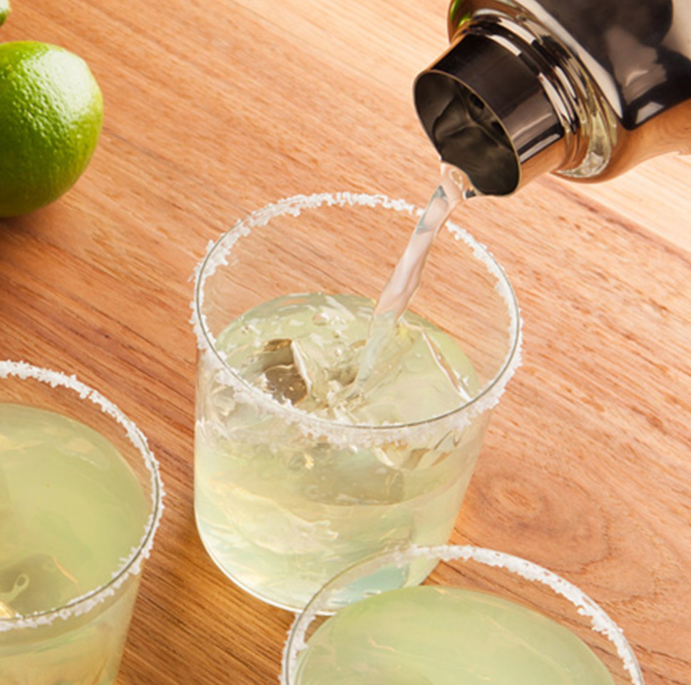

Celerita Recipe

Description
Use Juli's Any Seltzer Cocktail Formula from our magazine to make this celerita. Turn flavored bubbly water or hard seltzer into a cocktail for two in no time flat with this easy recipe. Garnish this with salt and chipotle pepper or Hatch chile powder on the rim and a leafy celery stalk.
Ingredients
- 4 tablespoons chopped celery
- 1 teaspoon white sugar
- 3 ounces tequilla
- 1 (12 fluid ounce) can lime-flavored seltzer water
Directions
- Muddle celery and sugar together in a mixing glass until crushed.
- Add tequillaand stir to desolve sugar.
- Strain into 2 ice-filled Collins or rocks glasses.
- Top with seltzer.
More Recipes